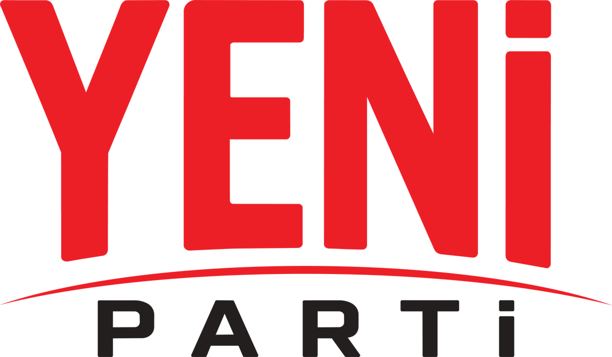

Yeni Parti Didim İlçe Başkanlığı'nın resmi Facebook sayfasına paylaşım kısıtlaması getirilmiştir. Kısıtlamanın kaldırılması için gerekli itiraz süreçlerini başlattık.
Siyasi partilerin halka ulaştığı kanalların daraltılması, yurttaşların haber alma hakkını doğrudan etkiler. Dijital platformların siyasi içerikler hakkındaki kararları şeffaf ve gerekçeli olmalıdır.